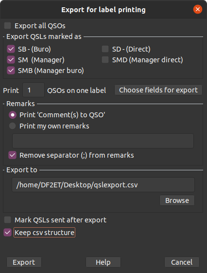

|
WARNING!
Backup your data often! BACKUP your log directory at the end of EVERY session!
All that you need to backup and store in a safe place is the log database directory
located in the ~/.config/cqrlog/database folder, or you can enable the autobackup function
in Preferences. This autobackup function creates an ADIF file with a backup of your log.
|
CQRLOG for LINUX by OK7AN & OK1RR

QSL records
All QSL operations must be done from the QSO list (Ctrl-O from the logging screen).
The QSO list has a dedicated QSL menu item in the upper menu bar.
- Send QSL - the sent QSL menu has following options:

- Buro (B) (a 'B' appears in the log, column 'QSL sent')
- Direct (D)
- eQSL(E)
- Manager (M)
- Do not send (N)
- Manager direct (MD)
- Manager buro (MB)
- Confirmad by email (CE)
If you want to send a QSL card, it is better to mark the QSO record with a similar mark
which begins with 'S' (Send). This can be done with the Ctrl-W shortcut.
The QSO record will be marked with the default option 'SB'
(Send via the Buro). For other options, go to the menu QSL->QSL send->Will send-> and
choose an appropriate option. Once a QSL is complete (ready to go), press Ctrl-S.
The 'S' letter disappears making it clearly visible that the QSL is complete and sent.
- Receive QSL - navigate to the record for the QSL card received.
Press Ctrl-R and in the 'QSL_R' (QSL Received) field an 'X' will appear.
QSL manager search

When you choose this option A QSL manager window appears, in the lower left corner is
a box with a Find button.
For LoTW operations see here.
QSL labels printing
QSL label printing is accomplished with the gLabels software
which is very powerful and allows you to print QSL labels of any size,
any number, also a whole QSL card can be designed and printed in professional quality
(printer depending). The gLabels software can be downloaded from
http://glabels.sourceforge.net/. It contains numerous predefined templates of label sheets
from many manufacturers. Most Linux distributions have gLabels in their repositories.
The main task of CQRLOG is data preparation in a format (CSV) which
can be processed by gLabels. Several QSOs on a single label are possible and
gLabels provides all that we need.
QSL label template

A template with data to be printed, its order, typeface, position etc.
is needed to print your QSL labels. gLabels uses its own format for label design.
The result is a binary file. The syntax can be derived from the label designer picture,
you own label design can be derived from the example qsl.glabels included in the CQRLOG
installation.
Printing of individual QSL labels (default)
The QSO records should be properly marked. Records previously marked
SB (Send Bureau), SM (Send Manager), SMB (Send Manager - Bureau), SD (Send Direct) or SMD
(Send Manager- Direct) in any combination are exported.

Batch QSL label printing
This method can be used if no QSO records are marked.
A filter can be set up, labels are printed for the filtered output and all such records
are marked as 'QSL sent'. To make this option effective, check the box 'Export all QSOs'
and 'Mark QSLs sent after export'. If you forget to check the 'Export all QSOs' box,
no output will be generated unless there are previously marked QSO records (see above).
If the 'Mark QSLs sent after export' remains unchecked, no QSO records will be marked as
'QSL sent'.
For both methods, the filtering potential can be utilized.
For example, you can filter out all QSOs with DJ3 stations and print QSL labels for them.
You will get such output:

There is no need to print QSL labels online on your printer. A very
good and proven trick is to print the labels to a PDF file, check that for correctness and
proper alignment against a real label sheet and then print it.
Auto mark QSL

This option allows you to set the QSL field for the first QSO with a
particular station on a band, mode, band/mode or for the first band, mode, band/mode
contact with a particular DXCC country regardless of the station.

It works in cooperation with the filters, however the test for the 'first QSO' is taken
from the whole log. You can limit your selection to 2008 but if you worked this station
in 1998 for first time, it will NOT be marked. This prevents you from sending multiple QSLs
for an already confirmed contact on that band, mode or band+mode.